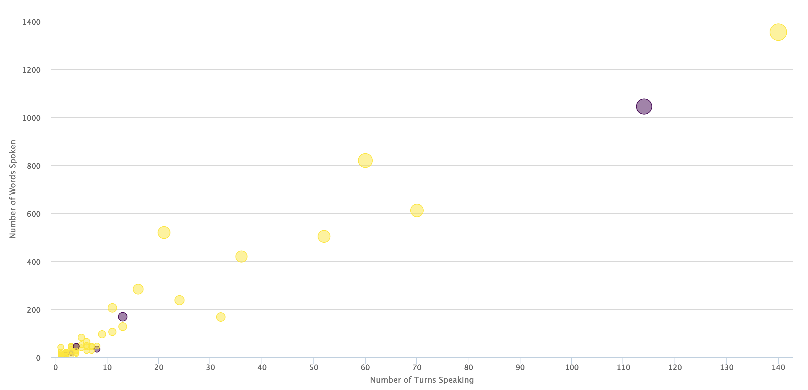
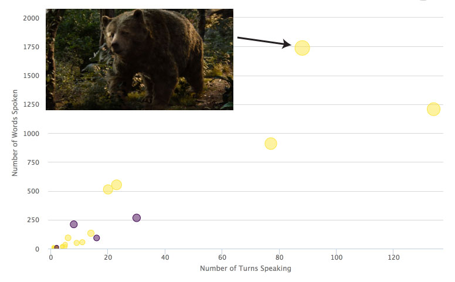
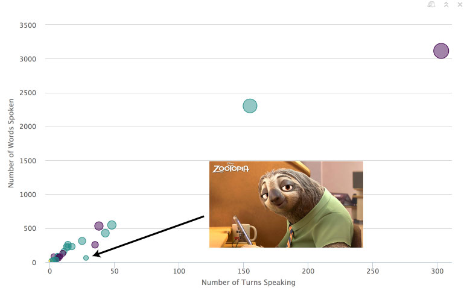
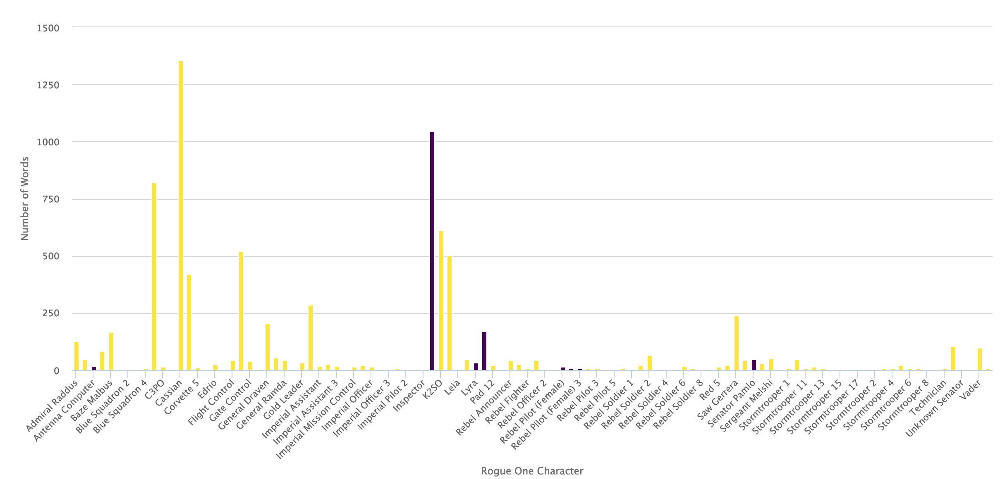
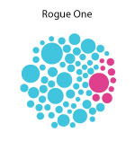
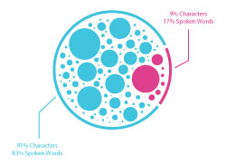
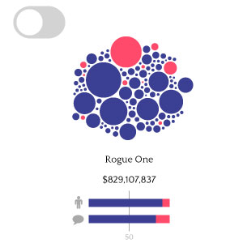
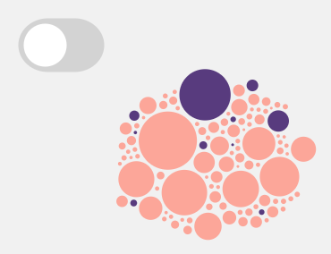

Gender Parity and Dialogue in 2016’s Highest Grossing Films
January 7 2017 • 22 min read
Image by Noom Peerapong
Introduction
Unlike most of my personal projects, this one didn’t start with a dataset. It started with going to see the newest movie from the Star Wars universe: Rogue One.
While I’m not a die-hard member of the Star Wars fandom, I did grow up watching the films (my father IS a devoted member of the fandom) and truly enjoying the stories. Like many other little girls watching those movies, Princess Leia’s character always resonated with me because she was just about the only speaking female character in the original trilogy.
But things have changed since the late 1970’s and early 1980’s when those movies were released. I mean, Disney/Lucas Films has released 2 movies in the past 2 years and BOTH have female leads! Things have got to be better than they were, right? Well, I definitely had high hopes for female equality in the Star Wars Universe until I actually watched Rogue One. Jyn Erso was indeed a main character, but like Princess Leia she seemed to be totally surrounded by men in nearly every scene. And while the film does technically pass The Bechdel Test (brief conversations between Jyn and both her mother and Mon Mothma allowed this box to be checked off), it felt far from equal. Being data-minded, I wanted to see how many female characters there actually were, and how much they spoke throught the story.
Choosing the Movies
Originally, I planned to look at the transcripts of all the Star Wars movies to see if female representation really has changed over the years, but again, several of those movies were created almost 40 years ago. Is it fair to compare them directly? So, I started thinking about comparing movies that were all created at the same time. That is, movies that were all released in 2016. To limit this project to some sort of semi-reasonable scope, I decided to keep it to the Top 10 Highest Grossing Movies Worldwide from 2016. That left me with the following movies in this order:
- Captain America: Civil War
- Finding Dory
- Zootopia
- The Jungle Book
- The Secret Life of Pets
- Batman V. Superman: Dawn of Justice
- Rogue One: A Star Wars Story
- Deadpool
- Fantastic Beasts and Where to Find Them
- Suicide Squad
That’s 4 superhero/action movies, 2 Sci-Fi/Fantasy, and 4 animated or family movies. Not a perfect distribution of movie genres, but at least there’s a bit of variety.
Deciding on Data Collection
I decided to delve a little bit into similar data exploration projects that have been conducted (like this one or this one) and found that I could look at a few things:
- On-Screen Time
- Words Spoken per Character
- Number of Female Characters
- Number of Female “Lead” Characters
While some really cool technology exists to help measure screen time in movies, it seemed to either be something that I couldn’t use for a side project fueled by my own curiosity or had to be done manually and would thus have taken forever.
Instead, I decided to focus on dialogue. I considered using screenplays as my source for movie dialogue, but so many of them were not publicly available. However, dedicated movie fans tend to transcribe movie dialogue and post the transcripts on the internet. Tracking those down took some work, but once I found them, it was relatively smooth sailing. For a few, I couldn’t find a transcript, but I was able to find closed caption files. For those, I had to re-watch the movie and manually add in which character said each line.
I did mention that I was really curious about this issue, right?
Analysis
Once I had all of the transcripts either from fans or captions, it was just a matter of reading the .txt file into R and counting the words per character. I’ll show various stages of the Rogue One graphics throughout this post, but the analysis was the same for each movie. The process looked like this:
# Installing Necessary Packages
# For Web Scraping Transcripts
library(rvest)
library(curl)
# For Data Frame Manipulation
library(dplyr)
library(tidyr)
library(stringr)
library(stringi)# Import Transcript (with formatting)
RO <- readLines("RogueOneTranscript.txt")
# Convert to Data Frame
RO <- as.data.frame(RO)
# Remove empty rows
RO <- RO %>%
filter(!(RO == ""))
# Separating Character from words
RO_full <- RO %>%
separate(col = RO, into = c("Character", "Words"), sep = ":", extra = "merge") %>%
# Eliminate script notes
filter(!is.na(Words)) %>%
# Trim white space and convert Character to factor
mutate(Character = as.factor(str_trim(Character)),
Words = str_trim(Words))Assigning Gender to Characters
Now that I had a data frame with both Character and Words columns, I had to assign Genders to each Character. This was sometimes quite challenging. Here’s how I did it:
When possible, use the pronoun that other characters use. If a character is referred to by others as “he” or “him”, then it’s a male character.
If there is no pronoun used throughout the movie but the character is named or credited, use the gender of the actor/actress (using IMDB).
Disclaimer: Gender of actors/actresses assumed based on publicly available information as of January 2017.
If there is no pronoun used for a character and the character is not named or credited, look at the closed captions. Sometimes they will name the character that spoke.
If all else fails, make an educated guess based on the character’s voice.
I’ll be the first to say that these methods are not perfect. But for a personal project where I just want to explore some data, I feel like it’s pretty good. However, if you caught a mistake on my part, please let me know.
In R, I assigned genders to characters like this:
# Assign Genders to Rogue One Characters
RO_males <- c("Admiral Raddus", "Announcer", "Bail Organa", "Baze Malbus", "Blue Squadron 1", "Blue Squadron 2", "Blue Squadron 3", "Blue Squadron 4", "Bodhi Rook", "C3PO", "Captain Antilles", "Cassian", "Chirrut Imwe", "Corvette 5", "Edrio", "Imperial Soldiers", "Engineers", "Flight Control", "Galen", "Gate Control", "General Dodonna", "General Draven", "General Merrick", "General Ramda", "Gold Leader", "Governor Tarkin", "Imperial Assistant", "Imperial Assistant 2", "Imperial Assistant 3", "Imperial Controller", "Imperial Mission Control", "Imperial Mission Control 2", "Imperial Officer", "Imperial Officer 2", "Imperial Officer 3", "Imperial Pilot", "Imperial Pilot 2", "Inspector", "K2SO", "Krennic", "Lieutenant Sefla", "Dr. Cornelius Evazan", "Pad 12", "Prisoner", "Rebel Announcer", "Rebel Army", "Rebel Fighter", "Rebel Officer", "Rebel Officer 2", "Rebel Pilot", "Rebel Pilot 2", "Rebel Pilot 3", "Rebel Pilot 4", "Rebel Pilot 5", "Rebel Soldier", "Rebel Soldier 1", "Rebel Soldier 10", "Rebel Soldier 2", "Rebel Soldier 3", "Rebel Soldier 4", "Rebel Soldier 5", "Rebel Soldier 6", "Rebel Soldier 7", "Rebel Soldier 8", "Rebel Soldier 9", "Red 5", "Red Leader", "Saw Gerrera", "Senator Jebel", "Senator Vaspar", "Sergeant Melshi", "Ship Computer", "Stormtrooper 1", "Stormtrooper 2", "Stormtrooper 3", "Stormtrooper 4", "Stormtrooper 5", "Stormtrooper 6", "Stormtrooper 7", "Stormtrooper 8", "Stormtrooper 9", "Stormtrooper 10", "Stormtrooper 11", "Stormtrooper 12", "Stormtrooper 13", "Stormtrooper 14", "Stormtrooper 15", "Stormtrooper 16", "Stormtrooper 17", "Stormtrooper 18", "Technician", "Tivik", "Unknown Senator", "Unknown Senator 2", "Vader", "Vader's Assistant")
RO_females <- c("Antenna Computer", "Girl's Mother", "Jyn", "Leia", "Lyra", "Mon Mothma", "Rebel Pilot (Female)", "Rebel Pilot (Female) 2", "Rebel Pilot (Female) 3", "Senator Pamlo")
RO_full <- RO_full %>%
mutate(Gender = ifelse(Character %in% RO_females, "female",
ifelse(Character %in% RO_males, "male", "unknown")))Some questions I’ve already received about this process:
- What if a male character is voiced by a female actress (e.g., Tommy Pickles in Rugrats) or a female character is voiced by a male actor (e.g., Roz in Monster’s Inc.)?
- Well, in both of those cases, I’d have assigned the gender based on the pronouns used by other characters before getting to the actor/actress’ gender. The same methodology applies here. To my knowledge, I didn’t actually run into that problem with these movies. However, if an unnamed rhino was voiced by a female, I did assume it was a female rhino.
- Can you really know the gender of an animated character?
- Nope! Again, I am relying on the other characters in the film to know what to call one another. This may be slightly flawed but it’s the best I can do with the information I have.
Counting Words
Now that each of the characters has an assigned gender, it’s time to count how many words each character spoke. In R, I used the dplyr and stringi packages for this.
# Counting words per character
RO_full2 <- RO_full %>%
mutate(count = stri_count(Words, regex = "\\S+")) %>%
group_by(Character, Gender) %>%
summarise(Total_Words = sum(count)) %>%
filter(!(Gender == "unknown"))I should note that I did not include a “minimum number of spoken words limit” to this project. So that means that any character that spoke even a single word is included. And yes, that means every stormtrooper that uttered at least one word will be in here.
Visualizing the Data
In R
Scatter Plot
As a native R user, my first attempt to visualize all of this data was naturally in R. I started with a simple scatter plot for each movie. I had “Number of Turns Speaking” (i.e., the number of independent times that character’s name showed up) on the x-axis, “Total Number of Words Spoken” on the y-axis, and the “Total Number of Words Spoken” also mapped to circle size. I decided to use the highcharter package and ended up with something like this:

Note: this figure that was once interactive has now been replaced with a static image. The above interactive code should still work, though if you choose to use it
Again, this is the figure for Rogue One, and we can see some potentially interesting things here. For instance, Cassian (the male lead) speaks more than Jyn (the female lead). It’s also easy to spot characters that are a bit more long-winded when they get to speak (Bodhi Rook and Galen) while others keep things short and to the point (Baze Malbus).
I looked at these figures for each movie, and found a few other entertaining outliers. In The Jungle Book, Baloo spoke the most words, but also had fewer speaking opportunities than Mowgli. He rambled more than any other character in the movie (which, didn’t actually contain too much dialogue, overall).

There was another funny outlier in the Zootopia figure. This time, instead of the outlier belonging to a talkative bear, it belonged to a slow-talking sloth, Flash Slothmore. He spoke quite a few times, but didn’t actually say many words.

Unfortunately, other than those few amusing findings, these figures weren’t helping me to see the number of speaking female characters amongst the entire speaking cast or the number of words each spoke, particularly because there were so many characters with so few words that they all overlapped.
Bar Graph
Since the scatter plot didn’t work, I thought maybe a bar chart would. I plotted the characters along the X axis and total number of spoken words along the Y and (again for Rogue One) ended up with this:

Note: this figure that was once interactive has now been replaced with a static image. The above interactive code should still work, though if you choose to use it
Still less than ideal. My biggest problem here is that there is such a big range between the main characters with lots of words and the minor characters with very few. Even in an interactive figure, you are required to zoom to get an idea of the smaller characters’ contributions.
Needless to say, I wasn’t happy with the bar graph either.
In Illustrator
In the end, I decided to make an axis-free bubble chart. I should point out that I am perfectly aware of the arguments against bubble charts (look here), but in this case, I thought the visualization would be effective.
The problem? I had no idea how to make an axis-free bubble chart in R.
Before going down the rabbit-hole of making a new type of graphic in R, I decided to use my trusty Adobe Illustrator to quickly see what these visualizations might look like first. So I pulled my highcharter bubble charts into Illustrator and traced the circles to get an idea of relative size. I ended up with lots of groups of bubbles that looked like this:

But there were a few issues with this. While I liked that you could easily spot the main characters, I knew that there were several characters in Rogue One who had fewer than 10 words, but their bubbles seemed to indicate more. I’d clearly have to alter how I sized the circles. It was also difficult to get an idea of what percentage of the characters or spoken words actually came from female characters.
So, I adjusted the figure. I calculated the proper radius of a circle so that each circle’s area was scaled to the total number of words spoken by each character.
I did this in R.
RO_full2 <- RO_full2 %>%
mutate(radius = sqrt(Total_Words),
diameter = radius*2)I could now manually enter the necessary diameter for each circle into Adobe Illustrator.
While a full how-to for Adobe Illustrator design is outside the scope of this post, you can find lots of information on Adobe’s site.
That definitely helped make the circles a more reasonable size. Now to add some extra information, like the percentage of female characters and spoken words. Again, I calculated in R and added the data to Illustrator. I thought that the best way to display that information was just to put a circle around the bubbles, cut the circle, and color it to match the bubbles it was near. Then add a call-out of information. It looked like this:

I was decently happy with it, until I (luckily) asked a friend to look at it. Her first response was asking about which percentage the pink outer line represented: the percentage of female characters or percentage of words spoken by females. It was an excellent question because, although I had intended the outer lines to be mostly decorative, they were so reminiscent of a pie or donut graph that we instinctively read it this way. So either I had to find a way to get the bubbles into “pie” pieces or get rid of the outer lines.
Back to the drawing board.
Adding Interactivity with d3.js
While I was still trying to figure out the best way to show the overall character and word percentages for each movie, I ran into another issue. I loved the bubbles, but I wanted to know who each bubble represented. Where were my favorite characters in this bubble mass? I briefly toyed with the idea of adding an arrow with a character name to each bubble or trying to put names in the bubbles, but with so many characters and such a wide range of bubble sizes, I knew it would get too cluttered.
Luckily for me, I had recently stumbled upon a fantastic data visualization collaboration called data sketch|es. I absolutely loved their unique data visualizations and the way they added interactive elements when necessary. After looking through their write-ups, I knew that interactivity, and more specifically: tooltips, were exactly what my visualization needed and it looked like the best way to do that would be using d3.js.
However, when I started this project, I had never once touched d3.js or Javascript. I used packages like highcharter which wrapped Javascript and let me use it in R. When I first decided to add tooltips to this visualization I was hoping for something similar. I looked for a bridge between the programs I knew (R or Adobe Illustrator) and d3.js. I found that you could import .svg files from Illustrator into d3.js and add interactive tooltips to them, but all of the values had to be manually entered. That seemed like it was asking for typos.
The more I looked, the more I realized I’d need to learn some d3.js to do this the way I want. So, to internet classes and StackOverflow I went. Somewhere along the line, I stumbled upon a fantastic interactive bubble chart from the New York Times and decided that if I was going to make my bubbles interactive, I also wanted to add the ability to separate them by gender. I was able to find a few excellent tutorials on how to make this happen (here and here). So I played and experimented and played some more. When I got stuck I returned to Google searching and reading. At one point I was stuck on a problem for hours and could not find a workable solution, so I turned to the kind people of the internet, asked for help, and was lucky enough to have a very knowledgable user respond right away.
I’m uploading my .js, .css, and .html files to Github, so anyone interested in exploring them, please do. As I learn more Javascript I hope to come back to this project and optimize the code. I know right now that it is far from perfect, but for my first project with d3.js, I’m very happy with how it turned out. To give some brief insight into parts of the d3.js code:
I once again scale the circles by area, with a maximum circle diameter of 40 px.
var radiusScale = d3.scaleSqrt().domain([1, 4692]).range([1, 40])I define a few forces to move the circles throughout their .svg area (a 300 px by 300 px box). There are two separate X forces (forces that move the circles along the X axis) since I needed two conditions: all the bubbles combined and bubbles separated by gender.
// Define the two forces along the X axis to split by gender
// the drawing force for males is at 30% of the width of the svg box
// the drawing force for females is at 70% of the width of the svg box
var forceXSplit = d3.forceX(d => width * (d.Gender === "male" ? 0.3 : 0.7))
.strength(0.2);
// Define the force along the X axis to combine all bubbles together
// (at half the width of the svg box)
var forceXCombine = d3.forceX((width)/2).strength(0.1)Then, in order to keep the bubbles from overlapping one another, I added a collision force. The radius of this force was scaled based on circle size so that larger circles pushed circles further from their center than smaller circles.
var forceCollide = d3.forceCollide(function(d){
return radiusScale(d.Total_Words) + 1
})
.iterations(10);With all of my forces defined, I could combine them in a simulation to determine the proper location of each bubble in the group.
var simulation = d3.forceSimulation()
.force("x", forceXCombine)
.force("y", d3.forceY((height / 3) + 10).strength(0.15))
.force("collide", forceCollide);Then I just needed to include my data file so that each circle could be created automatically and sized according to the total number of words spoken by a character. At the same time, I added the tool tips that triggered when the user’s mouse hovered over a circle. Again, the tool tips were automatically filled with information from the data file.
# Export data from R
write.csv(RO_full2, "RogueOne.csv")// Import data into Javascript
d3.queue()
.defer(d3.csv, "RogueOne.csv")
.await(ready)
function ready (error, datapoints) {
datapoints.forEach(d => d.Total_Words = +d.Total_Words);
var mousemove = function() {
return tooltip.style("top", (d3.event.pageY-10)+"px").style("left",(d3.event.pageX+10)+"px");
}
var mouseout = function(){return tooltip.style("visibility", "hidden");}
var circles = svg.selectAll(".Character")
.data(datapoints)
.enter().append("circle")
.attr("class", "Character")
.attr("r", function(d){
return radiusScale(d.Total_Words)
})
.style("fill", d => d.Gender === "male" ? "#3b3f93" : "#ff4a6b")
.on("mouseover", function(d) {
tooltip.html(d.Character + "<br><br> Words Spoken: " + d.Total_Words);
tooltip.style("visibility", "visible");
})
.on("mousemove", mousemove)
.on("mouseout", mouseout);
} I added a clickable element within each svg box to toggle between the combined and separated conditions for the bubbles. The style and functionality were inspired by the toggle switch widget from the SaVaGe library. I generated rectangles of sizes corresponding to the percentages of male and female characters and words spoken beneath my bubble grouping to give viewers an overall idea of representation within each movie. This percentage-wise stacked bar graph seemed to make the overarching trends clearest. I used Font Awesome icons alongside each bar graph to differentiate between character and word percentages. And that’s about it! The final design looks like this:

Again, the entire code used to generate the d3.js figure is available on my Github and the interactive version is here
Color Considerations
Once I had my bubble charts working with their corresponding bar graphs, I needed to make a design decision: what color should these be? The simple/stereotypical answer when displaying genders (at least in the US) is “blue for boys and pink for girls”. I really wanted to use a different color scheme. I’m not the biggest fan of the color dichotomy we use in America today and didn’t want to perpetuate it in my data visualization. So I tried a few other color schemes. I found beautiful color palettes on the following websites:
But I ran into an issue. I must have tried hundreds of color schemes (many of which looked better with the background gray than the ones that I screenshot here).

But regardless of the color scheme, I couldn’t easily tell which group represented males and which represented females. Yes, that’s what legends are for, but in the end, data visualization should be as easy to interpret as possible. In this case, that meant that some shade of blue and pink/red would be the easiest to understand. So, I found my favorite combination of the two and moved on.
Key Takeaways
If you haven’t already checked out the interactive version, do that here.
Before I start this section, I feel the need to point out that I did not do any statistics, machine learning, etc. on these data. I really set out on this project just to see if my impressions of female representation in 2016’s movies could be backed up by data and to find an interesting way to visualize it. If you’d like to do some more in-depth analytics yourself, I made the word-count data available. For legal reasons, I can’t post the transcripts themselves online.
Now that I’ve got that out of the way, here are the key takeaways from this project:
- Highest Percentage of Female Characters: Finding Dory (42% Female Characters)
- Lowest Percentage of Female Characters: Rogue One (9% Female Characters)
- Highest Percentage of Female Dialogue: Finding Dory (53% Female Dialogue)
- Lowest Percentage of Female Dialogue: The Jungle Book (10% Female Dialogue)
By Movie:
- Captain America: Civil War: Although this is titled a Captain America movie, Tony Stark (Ironman) speaks more than Steve Rogers (Captain America). Even with 2 female members of the “Avengers” team, this movie only had 16% female dialogue.
- Finding Dory: This movie scored the highest in both percentage of female characters and percentage of female dialogue, but it’s hard to not notice that most of the dialogue seems to revolve around Dory herself. She is the title character, but she alone accounts for 74% of the female dialogue and 39% of the movie’s dialogue overall. Alternatively, the “lead” male character, Marlin, only accounted for 32% of the male dialogue. Maybe Marlin wasn’t the male lead. It could have been Hank with 22% of the male dialogue. Or Bailey with 10%. Male dialogue in this movie is more well-spread amongst characters than female dialogue.
- Zootopia: While there were still more male than female characters in this movie (38% female) the dialogue was close to equal (46% female). Like Finding Dory, the main character of this movie was female (Judy Hopps), and she accounts for 69% of the female dialogue. The main male character (Nick Wilde) says about 1000 fewer words than Judy Hopps, but also makes up only 43% of the male dialogue. In this case, the difference is likely due to the larger number of male characters.
- The Jungle Book: Although the writers clearly tried to make this movie more gender-equal than the original (by casting Scarlett Johansson as the voice of the historically-male snake, Kaa), it held the lowest amount of female dialogue (10%) and still only had 21% female characters. The male characters included the main, well-known ones (Mowgli, Bagheera, Baloo, King Louie, and Shere Khan) but also added a few new male speaking characters (e.g., a pangolin and squirrel that work with Baloo and a very possessive porcupine).
- The Secret Life of Pets: This movie follows the daily journeys of two male dogs and their (mostly male) friends. It boasts a 27% female cast with 19% female dialogue.
- Batman V. Superman: The second superhero movie on this list has 24% female cast and 23% female dialogue. Notably (although, perhaps not surprisingly) Lex Luthor spoke the most in this movie, with Bruce Wayne (Batman) coming in 2nd. For a movie with two title characters, it’s worth pointing out that Superman only spoke 42% as many words as Batman.
- Rogue One: My perceptions of this movie appeared to be just about correct, with Rogue One scoring the lowest percentage of female characters (9%). Of the 17% female dialogue, 78% came from the female lead: Jyn Erso. It’s also worth pointing out that Cassian (the male lead) spoke about 300 more words than Jyn.
- Deadpool: The main character of this movie (Wade Wilson or Deadpool) said the most words of any character in this entire dataset (total of 4692). This may not be surprising because Deadpool is both the main/title character and the narrator of the movie, so he does talk quite frequently. His words make up 64% of the male dialogue in the movie.
- Fantastic Beasts: While watching this movie, I really felt like there was relatively equal representation between male and female characters. However, when looking at the data, it appears only 32% of the characters and dialogue were attributed to females.
- Suicide Squad: Like Fantastic Beasts, I really thought this movie felt pretty equal. Amanda Waller (played by Viola Davis) is a strong, prevalent character, Harley Quinn (Margot Robbie) was advertised to be a main character, and there were several other female characters throughout the movie. However, when actually looking at the data, only 22% of the characters and 32% of the dialogue were female. Floyd/Deadshot (played by Will Smith) had the most dialogue throughout the film.
So although the gender distribution in humans and most animals worldwide is roughly 50/50, the closest any of the top 10 movies of 2016 got to gender equality was 58% male characters and 42% female characters.
Future Work
While this project did validate my initial assumption (that there were very few females in Rogue One other than Jyn), I was incredibly surprised at the lack of gender equality throughout almost all of the top movies. These movies ranged by genre, target audience, release date (within 2016), and represented the worldwide highest grossing films (so we’re not looking only at the viewing habits of one country). Conducting this project was eye-opening for me and I hope to expand on it more in the future. Here’s what I’d love to add:
- Character Race (this one is especially tricky, particularly for uncredited actors/actresses and animated films)
- Dialogue for top movies in years before 2016
- Look specifically at dialogue in movies with female leads (how does the dialogue distribution differ between those films and films with male leads?)
If you are reading this and are so inclined to start one of this projects yourself, please do!
As always with my work, I appreciate feedback, so please either leave it in the comments section here, tweet at me or email me directly.